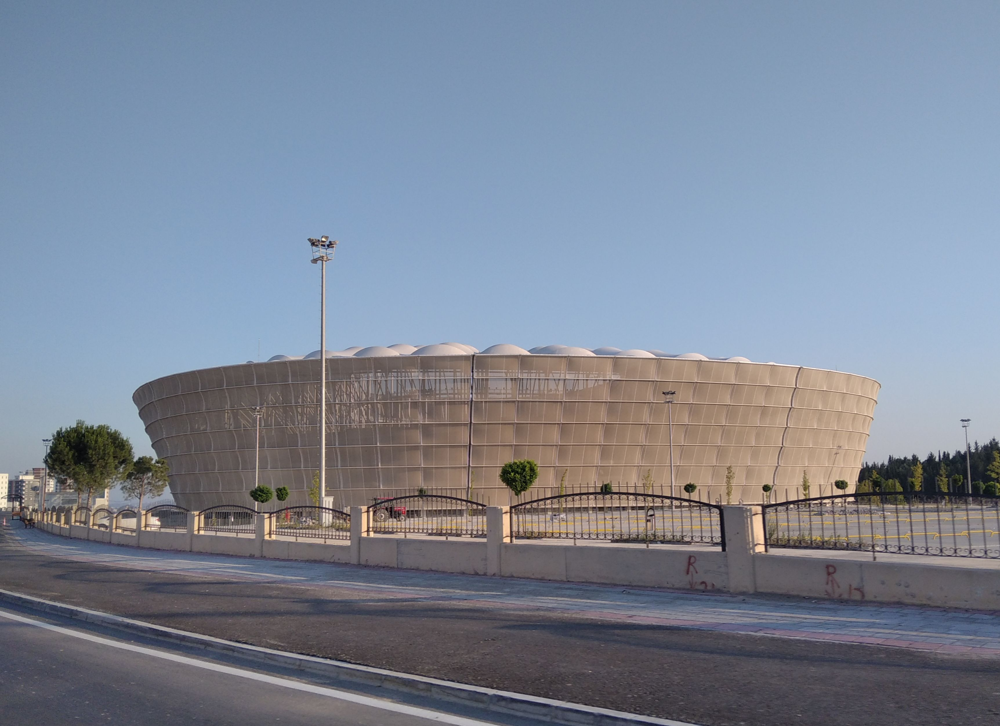
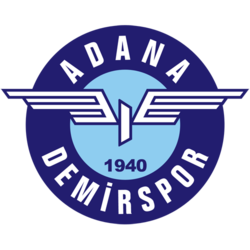

Adana Demirspor
Mavi-Lacivertli Şimşeklerin Şanlı Mirası


Yeni Adana Stadyumu
Adana Demirspor stadyumunu Adanaspor ile paylaşır.
Adana Demirspor Hakkında Bilgiler
Adana Demirspor,resmi olarak Adana'da kurulmuş;renkleri mavi lacivert olan spor kulübüdür.1960 yılında TFF tarafından düzenlenen turnuvada Adana^'yı temsil etmiş ve bu şekilde Adana; İstanbul,Ankara ve İzmirden sonra profesyonel liglerde yer alan dördüncü şehir olmuştur.Şehir 2022-2023 sezonunda Avrupa Konferans Ligi elemelerine katılarak tarihlerindeki en büyük başarıyı sergilemiş ancak eleme turunda Belçika ekibi Genk^e penaltılarda yenilip tura veda etmişti.Takım şu an aktif olarak TFF 1.ligde oynamakta ancak önümüzdeki sezon TFF 2.lige düşmeyi garantilemiştir.